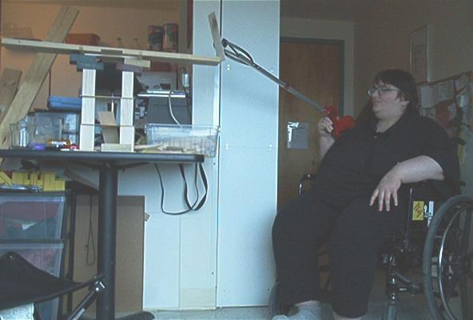

| Autism Information Library |
The muskie Construction Site
Why has the webmaster not been updating autistics.org often enough? She has been in use as a construction site. See the bottom of this page for her comments on the matter.
The DSM criteria for autism list "lack of social or emotional reciprocity" as one criterion. One example it gives is "involving others in activities only as tools or 'mechanical' aids." In inviting another autistic person to her home, little did muskie know that she would become a construction site as a result. She should remember to stereotype more often.
In addition to muskie, her kitchen table became co-opted for this purpose.
When the structures began to fall apart, muskie came into use not only as a construction site, but as a construction vehicle, as she rolled around picking up fallen pieces of wood.
For another large construction (or, rather, mining) vehicle named muskie, see the Big Muskie website.

And in the end, she doubled as a wrecking ball. (Dyspraxia will do that.)
home | project | library | links | discussion